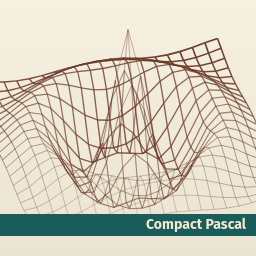

An embeddable Pascal-to-WebAssembly compiler
Compact Pascal is a new programming language in the Pascal family with a compiler that runs as WebAssembly. Embedding libraries for Rust and Zig let you compile and run Compact Pascal programs from your application.